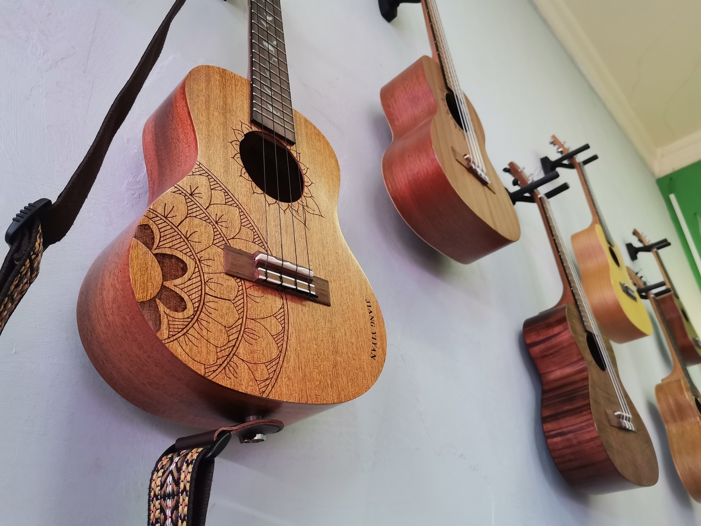
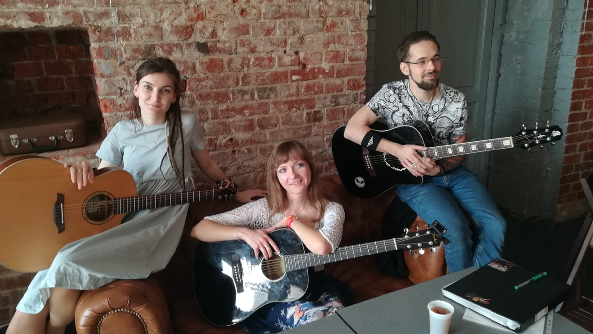
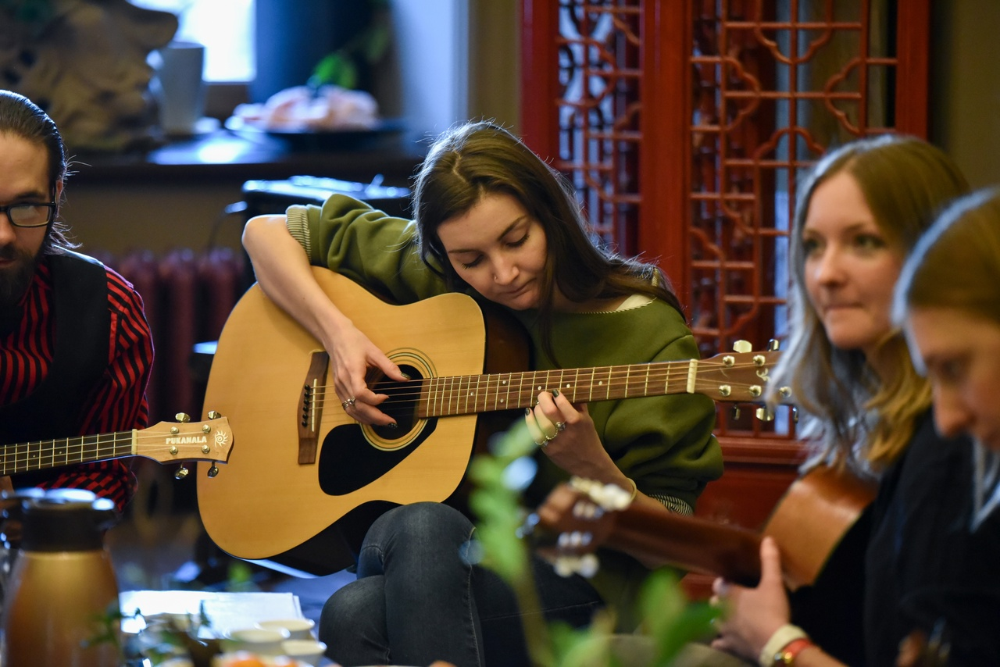

Виктория Трамваева, учитель игре на гитаре и укулеле, рекламировала свою школу через Яндекс и Google, но со временем это стало дороже и приносило меньше пользы из-за большой конкуренции.
Когда ИГ заблокировали, перешла в ВК, где благодаря нашему курсу смогла выбраться из выгорания, улучшить продвижение и снова заинтересоваться делом. Доход зависит от сезонов, но благодаря курсу смогла удержать клиентов и избежать больших финансовых проблем.
— Вика, расскажи, что было до курса, какой средний доход был в месяц? Сколько клиентов?
— Моей школе около 8 лет, раньше давала рекламу в яндексе, гугле, собирала заявки через сайт. Реклама стоила дёшево, а отдача была большая. Потом постепенно росла конкуренция и реклама дорожала, а отдачи от неё было все меньше. Я пробовала вести каналы в инсте и тиктоке, но потом все заблочили и я перешла в ВК.

Увидела ваш курс, прошла Вк-лайт и, в итоге, взяла полную версию, очень понравилась подача и подробное такое описание всех механизмов местной рекламы)
Доходы на протяжении всего времени были разные. Были и больше, чем сейчас, и меньше. Многое от сезона зависит, в плане количества заявок. Мне кажется, что я не очень буду полезна в этом интервью, потому что дело не новое, уже были свои взлёты и падения.
Но курс очень хорошо помог отвлечься, когда я была в затяжном депрессивном состоянии в связи с чередой событий в жизни. С помощью курса вернулся интерес и он помог мне вернуться к действиям.
В последнее время я подзабила на рекламу, у меня долго все ходят обычно. Последний раз крутила, наверное, в июне.
— Вика, но в ВК ты школу начала раскручивать с 0, верно? Поделись, насколько сложным или наоборот понятным для тебя был курс вк бабло? За сколько времени ты его прошла?
— Я давала раньше рекламу в ВК, но не очень эффективно.
Курс – бомба! Вообще все понятно. Я прям каждый день садилась, старалась хотя бы часть урока сделать или сразу целиком весь урок.
Это тоже многое говорит о курсе - он интересный. Я скучное вообще не могу себя заставить делать, порой. А тут меня захватывало, даже азарт какой-то был. Самым сложным было придумывать тексты. На это иногда и неделя могла уйти, но тут куратор Александра очень помогала, я делилась с ней, просила помощи, она подкидывала хорошие идеи, и работа шла дальше.
Мне очень понравились дополнительные знания по канве, я бы заленилась сама разбираться. Вообще сила курса - тут реально все настолько пошагово, что не понятно будет, только если намеренно сопротивляться этому.
По фотками мини-гайд тоже крутой. Казалось бы, ничего эдакого, но вид страницы меняется разительно. Во мне даже открылся дизайнер, который сидел неделю, наверное, рисуя в канве оформление плашек. Это тоже было весьма увлекательно.
По разделу рекламы все тоже очень круто, каждая кнопочка описана, ни разу нигде не стопорилась, просто пошагово делала все. Мне нравится, что после видео все текстом ещё описано и картинками. Можно не тыкать постоянно на видео, а идти по тексту, постепенно выполняя последовательность.

По времени прохождения смотрю по чату дз. Начала 27 октября, закончила 16 января. Кстати, это годовщина школы)
Получается около 2.5 месяца проходила.
По результатам - тут все сезонно (понимаю, что с правильным ведением страницы сезоны меньше влияют, но когда я что-либо вела?). Первый ученик пришёл с первых 500 рублей. Курс окупился где-то через пару месяцев, кажется.
— Получается, с куратором все было замечательно) я рада. Как думаешь, без куратора результаты бы были такими?
— Думаю, да. Я очень дотошный человек, ковыряю обычно каждую буковку, а у вас все подробно там. С куратором просто быстрее какие-то моменты проходить, вот когда затык с написанием текста. Ну и даёт уверенность, что если не пойму, то обращусь за помощью, снимает лишний стресс.
— Какие сейчас действия делаешь для привлечения клиентов? Как часто пишешь посты? Запускаешь ли рекламу?
— В июле слила около 10к и никто не пришёл, после этого не запускала рекламу. Но это потому что я упорно не веду страницу, я понимаю свои ошибки.
Сейчас без рекламы идут люди, но я хочу пообновлять все, там вроде новый кабинет и надо опять перепроходить курс. У нас же там уроки обновлялись тоже вроде, засяду на днях)

— А можешь поделиться, как изменилась жизнь, когда увеличился доход? Может что-то купила себе? Съездила в путешествие? Что-то смогла сделать, чего раньше не могла позволить себе?)
— Ну он не увеличился же)
Раньше в яндекс работала реклама хорошо, стала плохо работать - перешла вк, сайты свернула все.
Можно сказать, я уберегла себя от банкротства таким решением.
— Все, остался только вопрос, сколько сейчас зарабатываешь? Сколько в среднем в месяц? Сколько клиентов? А вот примерно сколько за год было прошедший заработано?
— В среднем за 21/22 учебный год 74к в месяц, за 22/23 учебный год 62к в месяц.
— Вика, спасибо тебе за ответы. Искренне желаю тебе еще бОльших успехов!